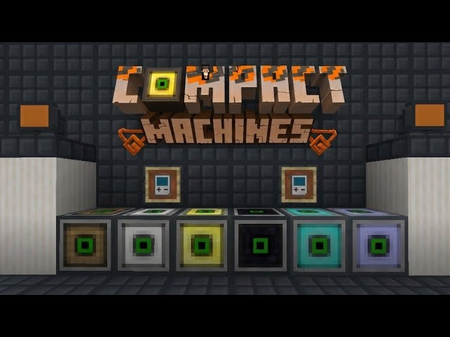
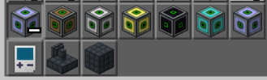

Compact Machines
Criado por: ReversyPlayer


Sobre esse Addon
🛢️ Barris Aprimoráveis & Fita de Embalagem
Cansado de ficar sem espaço de armazenamento e ter que reorganizar seus baús a toda hora? O Barris Aprimoráveis veio para transformar seu sistema de estoque! Esse addon traz 5 níveis de barris personalizados, permitindo aumentar muito a capacidade de guardar itens — além de uma função prática para mover tudo com facilidade.
📊 Níveis e Tamanhos dos Barris
Melhore seu armazenamento aos poucos! Cada nível oferece mais espaços e uma grade maior:
🟫 Barril de Cobre
Espaços: 36
Grade: 9 × 4
⬜ Barril de Ferro
Espaços: 54
Grade: 9 × 6
🟨 Barril de Ouro
Espaços: 72
Grade: 9 × 8
💎 Barril de Diamante
Espaços: 88
Grade: 11 × 8
⬛ Barril de Netherita
Espaços: 96
Grade: 12 × 8
⚙️ Principais Funcionalidades
✅ Melhoria Contínua: Para evoluir um barril para o nível seguinte, basta criar e usar itens específicos de atualização (ex: atualização de Ferro para Ouro). Não precisa quebrar o barril para melhorá-lo!
📦 Fita de Embalagem (Mova seus itens sem esforço!)
Precisa mudar sua base de lugar? Não precisa esvaziar tudo! Use a Fita de Embalagem para pegar qualquer barril com segurança — sem perder nenhum item dentro. Basta aplicar a fita, quebrar o barril e colocá-lo no novo local que quiser!
ℹ️ Observação: Perfeito para mundos de sobrevivência, conjuntos de mods e para quem quer manter todos os recursos organizados!
✅ Esse Addon adiciona 6 tipos de Sala/caixa diferente
✅ Novos itens e blocos
✅ Funciona em mundos e servidores